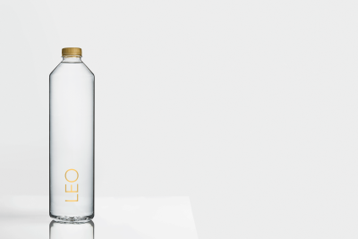
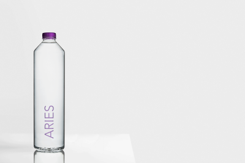
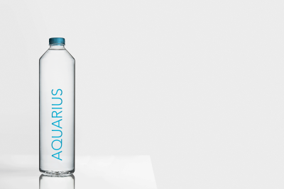

Produkter
-
Leo
Rav er en sten med en varm farve, der har en beskyttende og rensende effekt. Denne sten ville hjælpe og støtte dig igennem stressede tider.
Rubinen er en kraftfuld sten, der har en aktiverende effekt, der giver energi, motivation og lidenskab.
250,-
-
Aries
Opal er en sten med en stor beskyttende virkning, den skaber positivitet, glæde og åbenhed. Ametysten er kendt for sin dybe lilla farve. Denne ædelsten har en rensende effekt, og hjælper dig med at bearbejde indtryk og oplevelser.
250,-
-
Aquarius
Både Akvamarin og turkis er ædelsten der skaber en beroligende virkning på krop og sind. Denne sten sikrer også et klart sind.
Turkis er farven på denne sten. Den hjælper dig med at finde ny balance og beskytter mod frygt og angst.
250,-